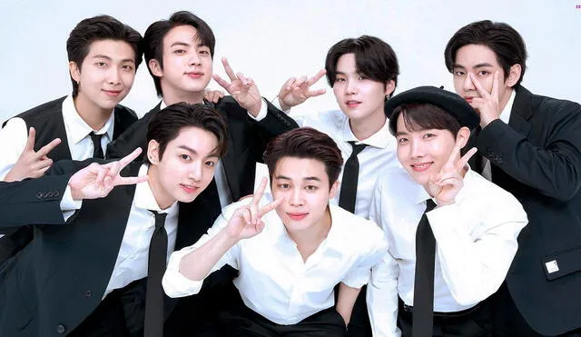

Los integrantes originales que conformaban BTS originalmente eran nueve: I11levn, Suwoong, Kidoh, Basick, Iron,
Beenzino, Atom y Cho Ik Jem y Namjoon, pero finalmente se quedó el líder y rapero del grupo, poco después se
unieron el resto de sus compañeros.
Quieres saber mas hacerca de los integrantes?
¡Te detallaremos informacion acerca de esta banda "BTS"!
BTS, también conocido como Bangtan boys, es un grupo surcoreano formado en 2010. Está compuesto por siete
integrantes: Jin, Suga, J-Hope, RM, Jimin, V y Jungkook. A pesar de haber sido creado con un estilo principalmente
hip hop, ha llegado a incorporar una gran variedad de géneros en su repertorio musical.

Datos generales
Origen: Seúl, Corea del Sur
Otros nombres: Bangtan Boys
Origen del nomre del grupo
BTS es una abreviatura de la expresión coreana Bangtan Sonyeondan (en hangul, 방탄소년단; en hanja, 防彈少年團), que
literalmente significa «Boy Scouts a prueba de balas». Según el miembro J-Hope, este hace referencia al deseo del
grupo de «dejar de lado los estereotipos, críticas, y expectativas dirigidas como balas hacia los jóvenes».1 En
Japón se lo conoce como Bōdan Shōnendan (防弾少年団?), que tiene una traducción similar. El 27 de julio de 2017 se
anunció que BTS también sería un acrónimo de «Beyond The Scene [Más allá de la escena]» como parte de su nueva
identidad de marca.2 Esto amplió el simbolismo de su nombre, que representaría además a una «juventud en
evolución 'BTS' que se sobrepone a las realidades a las que se enfrenta y que sigue adelante».3
Historia
La formación de BTS empezó en 2010, después de que el CEO de Big Hit, Bang Si-hyuk, firmara un contrato con RM
tras escucharlo rapear.4 El mismo año, la compañía realizó las audiciones Hit It, en las que Suga quedó en
segundo lugar.56 Posteriormente se unió el resto de integrantes y, aunque la alineación se cambió en varias
ocasiones, finalizó con Jin, Suga, J-Hope, RM, Jimin, V y Jungkook.78 El concepto original de BTS era similar al
del grupo hip hop 1TYM de YG Entertainment;9 sin embargo, Bang Si-hyuk decidió que la juventud contemporánea
necesitaba en su lugar «un héroe que les brindara apoyo».10 A pesar de que su debut se planificó para 2011 —para
lo que colaboró con artistas como Lee Seung-gi, Lim Jeong-hee y 2AM—, este se pospuso para reorganizar la banda y
convertirla en una de tipo idol más tradicional.11 Por otro lado, RM, Suga y J-Hope escribieron el tema
«Paldogangsan» para promover la convocatoria Hit It de ese año, en el que emplearon sus dialectos locales en la
letra debido a que el evento se llevó a cabo a nivel nacional.8
¿Cuál es el estilo de música de BTS?
Su música hizo guiños al hip-hop y la música electrónica de baile (EDM), géneros populares en Occidente. BTS realizó una gira nuevamente en EE.